Embedding a web-scale information network into a low-dimensional vector space facilitates tasks such as link prediction, classification, and visualization. Past research has addressed the problem of extracting such embeddings by adopting methods from words to graphs, without defining a clearly comprehensible graph-related objective. Yet, as we show, the objectives used in past works implicitly utilize similarity measures among graph nodes.
In this paper, we carry the similarity orientation of previous works to its logical conclusion; we propose VERtex Similarity Embeddings (VERSE), a simple, versatile, and memory-efficient method that derives graph embeddings explicitly calibrated to preserve the distributions of a selected vertex-to-vertex similarity measure. VERSE learns such embeddings by training a singlelayer neural network. While its default, scalable version does so via sampling similarity information, we also develop a variant using the full information per vertex. Our experimental study on standard benchmarks and real-world datasets demonstrates that VERSE , instantiated with diverse similarity measures, outperforms state-of-the-art methods in terms of precision and recall in major data mining tasks and supersedes them in time and space efficiency, while the scalable sampling-based variant achieves equally good results as the non-scalable full variant.
ACM Reference Format: Anton Tsitsulin, Davide Mottin, Panagiotis Karras, and Emmanuel Müller. 2018. VERSE: Versatile Graph Embeddings from Similarity Measures. In WWW 2018: The 2018 Web Conference,April 23–27, 2018, Lyon, France. ACM, New York, NY, USA 11 Pages. https://doi.org/10.1145/3178876.3186120
1 Introduction
Graph data naturally arises in many domains, including social networks, protein networks, and the web. Over the past years, numerous graph mining techniques have been proposed to analyze and explore such real-world networks. Commonly, such techniques apply machine learning to address tasks such as node classification, link prediction, anomaly detection, and node clustering. 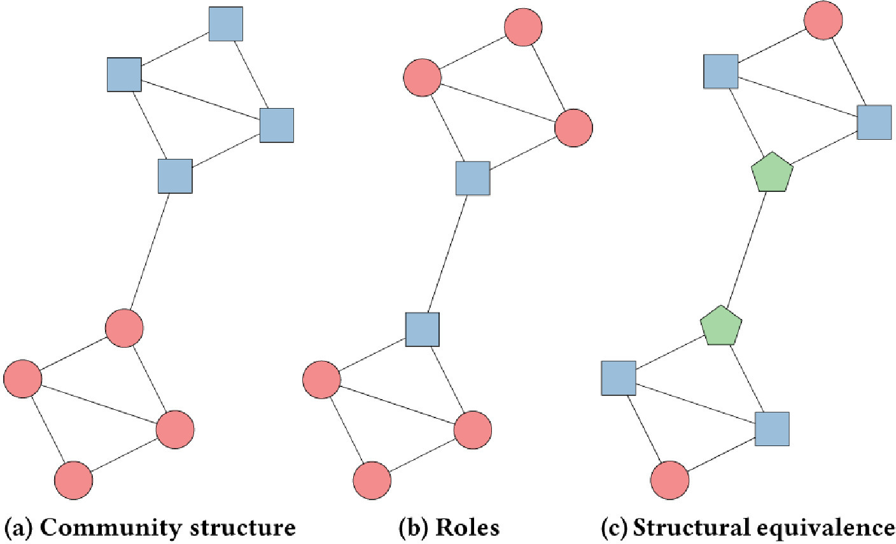
Figure 1:Three node properties are highlighted on the same graph. Can a single model capture these properties?
Machine learning algorithms require a set of expressive discriminant features to characterize graph nodes and edges. To this end, one can use features representing similarities among nodes [18]. However, feature engineering is tedious work, and the results do not translate well across tasks [15].
An alternative to feature design is to learn feature vectors, or embeddings by solving an optimization problem in unsupervised fashion. Yet devising and solving a universal and tractable optimization problem for learning representations has withstood research efforts [7]. One line of research [11, 42] applies classical dimensionality reduction methods, such as SVD, to similarity matrices over the graph; yet these methods are burdened with constructing the matrix. While a recent approach [33] overcomes this impediment, it results in poor quality in prediction tasks due to its linear nature.
Another line of research aims to generate features capturing neighborhood locality, usually through an objective that can be optimized by Stochastic Gradient Descent (SGD) [37, 41]. Such methods rely on an implicit, albeit rigid, notion of node neighborhood; yet this one-size-fits-all approach cannot grapple with the diversity of real-world networks and applications. Grover et al. [15] discerned this inflexibility in the notion of the local neighborhood; to ameliorate it, they proposed Node2vec, which biases the exploration strategy of [37] using two hyperparameters. Yet this hyperparametertuned approach raises a cubic worst-case space complexity and compels the user to traverse several feature sets and gauge the one that attains the best performance in the downstream task. Besides, a local neighborhood, even when found by hyperparameter tuning, still represents only one locality-based class of features; hence, Node2vec does not adequately escape the rigidity it tries to mend.
We argue that features extracted by a more versatile similarity notion than that of a local neighborhood would achieve the flexibility to solve diverse data mining tasks in a large variety of graphs. Figure 1 makes a case for such a versatile similarity notion by exposing three distinct kinds of similarity on a graph: community structure guides community detection tasks, roles are typically used in classification, while structural equivalence defines peer correspondences in knowledge graphs. As real-world tasks rely on a mix of such properties, a versatile feature learning algorithm should be capable of capturing all such similarities.
In this paper, we propose VERSE, the first, to our knowledge, versatile graph embedding method that explicitly learns any similarity measures among nodes. In its learning core, VERSE stands between deep learning approaches [12, 48] on the one hand and the direct decomposition of the similarity matrix [11, 42] on the other hand. Instead, VERSE trains a simple, yet expressive, single-layer neural network to reconstruct similarity distributions between nodes. Thereby, it outperforms previous methods in terms of both runtime and quality on a variety of large real networks and tasks.
Thanks to its ability to choose any appropriate similarity measure for the task at hand, VERSE adjusts to that task without needing to change its core. Thereby, it fully ameliorates the rigidity observed in [15], and integrates representation learning with feature engineering: any similarity measure, including those developed in feature engineering, can be used as input to VERSE. For the sake of illustration, we instantiate our generic methodology using three popular similarity measures, namely Personalized PageRank (PPR) [34], SimRank [21], and adjacency similarity. We also show that versatility does not imply a new burden to the user, merely substituting hyperparameter tuning with similarity measure tuning: using PPR as a default choice for the similarity measure leads to good performance in nearly all tasks and networks we examined.
We summarize our contributions as follows.
We propose a versatile framework for graph embeddings that explicitly learns the distribution of any vertex similarity measure for each graph vertex.
We interpret previous graph embeddings through the lens of our similarity framework, and instantiate VERSE with Personalized PageRank, SimRank, and Adjacency similarity.
We devise an efficient algorithm, linear in graph size, based on a single-layer neural network minimizing the divergence from real to reconstructed similarity distributions.
In a thorough experimental evaluation, we show that VERSE outperforms the state-of-the-art approaches in various graph mining tasks in quality while being even more efficient.
2 Related Work
In the absence of a general-purpose representation for graphs, graph analysis tasks require domain experts to craft features [4, 18] or to use specialized feature selection algorithms [36, 40]. Recently, specialized methods were introduced to learn representations of different graph parts [2, 31] and graphs with annotations on nodes [20, 55], or edges [19, 49]. We focus on learning representations of nodes in graphs without any prior or additional information other than graph structure.
Traditional feature learning learns features by compressing representations such as the Laplacian or adjacency matrix to a low-dimensional space. Early works in this area include spectral techniques [6] and nonlinear dimensionality reduction [39, 44]. In another vein, Marginal Fisher Analysis [51] analyzes the dimensionality reduction of a point data set as the embedding of a graph capturing its statistic and geometric properties. Such methods cannot be applied to large graphs, as they operate on dense matrices.
Some efforts have been made to overcome this limitation using enhanced linear algebra tools. Ahmed et al. [3] adopt stochastic gradient optimization for fast adjacency matrix eigendecomposition; Ou et al. [33] utilize sparse generalized SVD to generate a graph embedding, HOPE, from a similarity matrix amenable to decomposition into two sparse proximity matrices. HOPE is the first to support diverse similarity measures; however, it still requires the entire graph matrix as input and views the problem as one of linear dimensionality reduction rather than as one of nonlinear learning. This way, it deviates not only from current research on graph embeddings but also from older works [51].
Neural methods for representation learning. Advances in machine learning have led to the adoption of neural methods for learning representations [7]. Building on the success of deep learning in domains such as image processing [24] and Natural Language Processing (NLP) [8, 29, 35], word2vec [29] builds word embeddings by training a single-layer neural network to guess the contextual words of a given word in a text. Likewise, GloVe [35] learns a word space through a stochastic version of SVD in a transformed cooccurrence matrix. While such text-based methods inherently take neighbor relationships into account, they require conceptual adaptations to model graphs [37].
Neural Graph Embeddings. The success of neural word embeddings inspired natural extensions towards learning graph representations [11, 12, 15, 37, 46, 48]. DeepWalk [37] first proposed to learn latent representations in a lowdimensional vector space exploiting local node neighborhoods. It runs a series of random walks of fixed length from each vertex and creates a matrix of d-dimensional vertex representations using the SkipGram algorithm of [29]. These representations maximize the posterior probability of observing a neighboring vertex in a random walk. DeepWalk embeddings can inform classification tasks using a simple linear classifier such as logistic regression.
GraRep [11] suggests using Singular Value Decomposition (SVD) on a log-transformed DeepWalk transition probability matrix of different orders, and then concatenate the resulting representations. Struc2vec [38] rewires the graph to reflect isomorphism among nodes and capture structural similarities, and then derives an embedding relying on the DeepWalk core. Works such as [12, 48] investigate deep learning approaches for graph embeddings. Their results amount to complex models that require elaborate parameter tuning and computationally expensive optimization, leading to time and space complexities unsuitable for large graphs.
Nevertheless, all DeepWalk-based approaches use objective functions that are not tailored to graph structures. Some works [15, 38, 41] try to infuse graph-native principles into the learning process. LINE [41] proposed graph embeddings that capture more elaborate proximity notions. However, even LINE’s notion of proximity is restricted to the immediate neighborhoods of each node; that is insufficient to capture the complete palette of node relationships [15, 33, 38]. Furthermore, Node2vec [15] introduces two hyperparameters to regulate the generation of random walks and thereby tailor the learning process to the graph at hand in semi-supervised fashion. However, Node2vec remains attached to the goal of preserving local neighborhoods and requires laborious tuning for each dataset and each task.
Table 1:Outline of related work in terms of fulfilled () and missing () properties of algorithm and similarity measure.
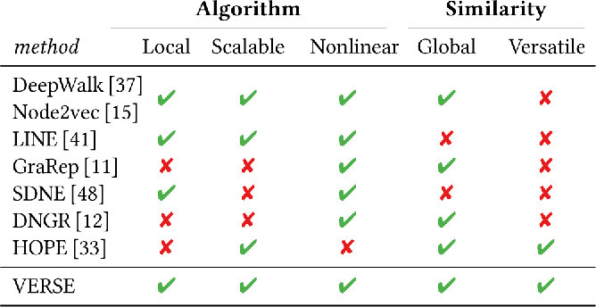
Overview. Table 1 outlines five desirable properties for a graph embedding, and the extent to which previous methods possess them. We distinguish between properties of algorithms, on the one hand, and those of any implicit or explicit similarity measure among nodes a method may express, on the other hand.
local: not requiring the entire graph matrix as input; GraRep , DNGR , and HOPE fail in this respect.
scalable: capable to process graphs with more than 106 nodes in less than a day; some methods fail in this criterion due to the dense matrix (GraRep), deep learning computations (SDNE), or both (DNGR).
nonlinear: employing nonlinear transformations; HOPE relies on a linear dimensionality reduction method, SVD; that is detrimental to its performance on building graph representations, just like linear dimensionality reduction methods fail to confer the advantages of their nonlinear counterparts in general [26].
global: capable to model relationships between any pair of nodes; LINE and SDNE do not share this property as they fail to look beyond a node's immediate neighborhood.
versatile: supporting diverse similarity functions; HOPE does so, yet is compromised by its linear character.
3 Versatile Graph Embedding
VERSE possesses all properties mentioned in our taxonomy; it employs nonlinear transformation, desirable for dimensionality reduction [26]; it is local in terms of the input it requires per node, but global in terms of the potential provenance of that input; it is scalable as it is based on sampling, and versatile by virtue of its generality.
3.1 VERSE Objective
Given a graph = (V, E), where V = (v1, …, vn), n = |V|, is the set of vertices and E⊆(V × V) the set of edges, we aim to learn a nonlinear representation of vertices v ∈ V to d-dimensional embeddings, where d ≪ n. Such representation is encoded into a n × d matrix W; the embedding of a node v is the row Wv, · in the matrix; we denote it as Wv for compactness.
Our embeddings reflect distributions of a given graph similarity ${sim}_\mathrm{G}: V \times V \rightarrow \mathbb {R}$ for every node v ∈ V. As such, we require that the similarities from any vertex v to all other vertices ${sim}_\mathrm{G}(v,\cdot)$ are amenable to be interpreted as a distribution with $\sum _{u \in V}{{sim}_\mathrm{G}(v,u)} = 1$ for all v ∈ V. We aim to devise W by a scalable method that requires neither the V × V stochastic similarity matrix nor its explicit materialization.
The corresponding node-to-node similarity in the embedded space is ${sim}_\mathrm{E}: V \times V \rightarrow \mathbb {R}$. As an optimization objective, we aim to minimize the Kullback-Leibler (KL) divergence from the given similarity distribution sim to that of simE in the embedded space:
We illustrate the usefulness of this objective using a small similarity matrix. Figure 2 shows (a) the Personalized PageRank matrix, (b) the reconstruction of the same matrix by VERSE, and (c) the reconstruction of the same matrix using SVD. It is visible that the nonlinear minimization of KL divergence between distributions preserves most of the information in the original matrix, while the linear SVD-based reconstruction fails to differentiate some nodes. 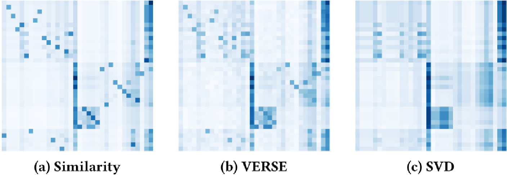
Figure 2:An example similarity matrix and its reconstructions by VERSE and SVD. Karate club graph [53], dimensionality d = 4 for both methods.
3.2 VERSE Embedding Model
We define the unnormalized distance between two nodes u, v in the embedding space as the dot product of their embeddings $W_u \cdot W_v^\top {}$. The similarity distribution in the embedded space is then normalized with softmax:
By Equation 1, we should minimize the KL-divergence from sim to simE; omitting parts dependent on sim only, this objective is equivalent to minimizing the cross-entropy loss function [14]:
We can accommodate this objective by stochastic gradient descent, which allows updating the model on each node singularly. However, a naïve version of gradient descent would require the full materialization of simE and ${sim}_{\rm G}$. Even in case ${sim}_{\rm G}$ is easy to compute on the fly, such as the adjacency matrix, the softmax in Equation 2 still has to be normalized over all nodes in the graph.
We use Noise Contrastive Estimation (NCE) [16, 30], which allows us to learn a model that provably converges to its objective (see [17], Theorem 2). NCE trains a binary classifier to distinguish between node samples coming from the empirical similarity distribution sim and those generated by a noise distribution $\mathcal {Q}{}$ over the nodes. Consider an auxiliary random variable D for node classification, such that D = 1 for a node drawn from the empirical distribution and D = 0 for a sample drawn from the noise distribution. Given a node u drawn from some distribution $\mathcal {P}{}$ and a node v drawn from the distribution of ${sim}_{\rm G}\left(u,\cdot \right)$, we draw s ≪ n nodes $\widetilde{v}{}$ from $\mathcal {Q}(u)$ and use logistic regression to minimize the negative log-likelihood:
where $\Pr _W$ is computed from W as a sigmoid σ(x) = (1 + e− x)− 1 of the dot product between vectors Wu and Wv, while we compute simE(u, ·) without the normalization of Equation 2. As the number of noise samples s increases, the NCE derivative provably converges to the gradient of cross-entropy [30]; thus, by virtue of NCE's asymptotic convergence guarantees, we are in effect minimizing the KL-divergence from sim. NCE's theoretical guarantees depend on s, yet small values work well in practice [30]. In our experiments, we use s = 3. These convergence guarantees of NCE are not affected by choice of distributions $\mathcal {P}{}$ and $\mathcal {Q}{}$ (see [17], Corollary 5); however, its performance is empirically dependent on $\mathcal {Q}{}$ [25].
3.3 Instantiations of VERSE
While VERSE can be used with any similarity function, we choose to instantiate our model to widely used similarities ${sim}_\mathrm{G}$, namely Personalized PageRank (PPR), Adjacency Similarity, and SimRank.
Personalized PageRank. Personalized PageRank [34] is a common similarity measure among nodes, practically used for many graph mining tasks [15, 28].
Given a starting node distribution s, damping factor α, and the normalized adjacency matrix A, the Personalized PageRank vector πs is defined by the recursive equation:
\[ \pi _s = \alpha s +(1-\alpha)\pi _{s}A \]
The stationary distribution of a random walk with restart with probability α converges to PPR [34]. Thus, a sample from ${sim}_\mathrm{G}(v, \cdot)$ is the last node in a single random walk from node v. The damping factor α controls the average size of the explored neighborhood. In Section 3.6 we show that α is tightly coupled with the window size parameter w of DeepWalk and Node2vec.
Adjacency similarity. A straightforward similarity measure is the normalized adjacency matrix; this similarity corresponds to the LINE-1 model and takes into account only the immediate neighbors of each node. More formally, given the out degree Out(u) of node u
We experimentally demonstrate that VERSE model is effective even in preserving the adjacency matrix of the graph.
SimRank. SimRank [21] is a measure of structural relatedness between two nodes, based on the assumption that two nodes are similar if they are connected to other similar nodes; SimRank is defined recursively as follows:
where I(v) denotes the set of in-neighbors of node v, and C is a number between 0 and 1 that geometrically discounts the importance of farther nodes. SimRank is a recursive procedure that involves computationally expensive operations: the straightforward method has the complexity of $\mathcal {O}(n^4)$.
SimRank values can be approximated up to a multiplicative factor dependent on C through SimRank-Aware Random Walks (SARW) [22]. SARW computes a SimRank approximation through two reversed random walks with restart where the damping factor α is set to $\alpha = \sqrt {C}$. A reversed random walk traverses any edge (u, v) in the opposite direction (v, u). Since we are only interested in the distribution of each ${sim}_\mathrm{G}^{\mathrm{SR}}(v, \cdot)$, we can ignore the multiplicative factor in the approximation [22] that has little impact on our task. 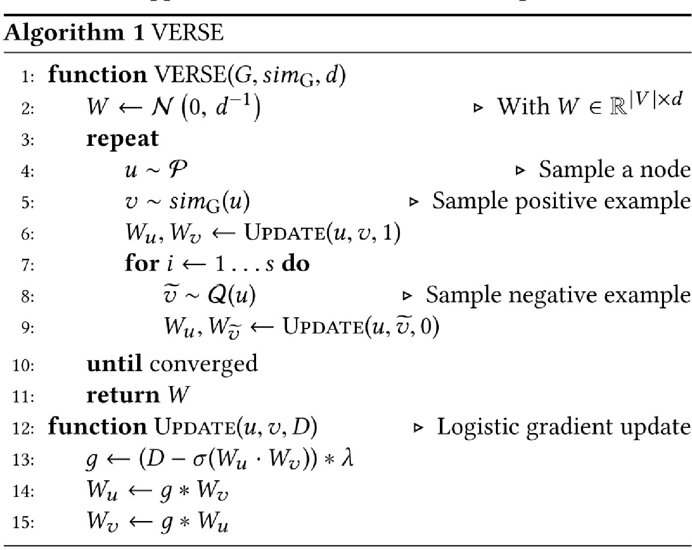
3.4 VERSE Algorithm
Algorithm 1 presents the overall flow of VERSE. Given a graph, a similarity function sim, and the embedding space dimensionality d, we initialize the output embedding matrix W to $\mathcal {N}(0, \frac{1}{d})$. Then, we optimize our objective (Equation 4) by gradient descent using the NCE algorithm discussed in the previous section. To do so, we repeatedly sample a node from the positive distribution $\mathcal {P}{}$, sample the sim (e.g. pick a neighboring node), and draw s negative examples. The σ in Line 13 represents the sigmoid function σ = (1 + e− x)− 1, and λ the learning rate. We choose $\mathcal {P}{}$ and $\mathcal {Q}{}$ to be distributed uniformly by $\mathcal {U}(1,n)$.
As a strong baseline for applications handling smaller graphs, we also consider an elaborate, exhaustive variant of VERSE, which computes full similarity distribution vectors per node instead of performing NCE-based sampling. We name this variant fVERSE and include it in our experimental study.
Figure 3 presents our measures on the ability to reconstruct a similarity matrix for (i) VERSE using NCE; (ii) VERSE using Negative Sampling (NS) (also used in Node2vec); and (ii) the exhaustive fVERSE variant. We observe that, while NCE approaches the exhaustive method in terms of matching the ground truth top-100 most similar nodes, NS fails to deliver the same quality. 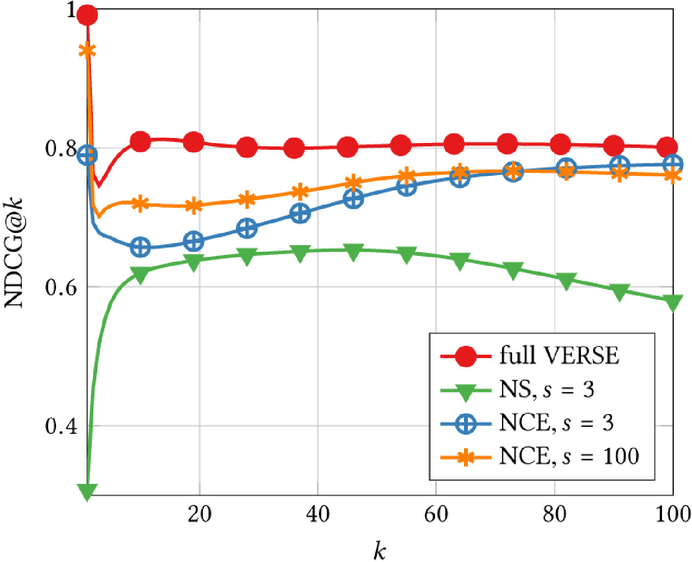
Figure 3:Ranking preformance in terms of NDCG for reconstructing PPR similarity, averaged across nodes in a graph.
3.5 Complexity Comparison
Table 2 presents the average (Θ) and worst-case ($\mathcal {O}{}$) time and space complexity of VERSE, along with those of methods in previous works; d is the embedding dimensionality, n the number of nodes, m the number of edges, and s the number of samples used, and t the number of iterations in GraRep. Methods that rely on fast sampling (VERSE and LINE) require time linear in n and space quadratic in n in the worst case. DeepWalk requires $\mathcal {O}(n\log n)$ time due to its use of hierarchical softmax. Node2vec stores the neighborsofaneighbor, incurring a quadratic cost in sparse graphs, but cubic in dense graphs. Thus, VERSE comes at the low end of complexities compared to previous work on graph embeddings. Remarkably, even the computationally expensive fVERSE affords complexity comparable to some previous works.
Table 2:Comparison of neural embedding methods in terms of average (Θ) and worst-case ($\mathcal {O}{}$) time and space complexity.
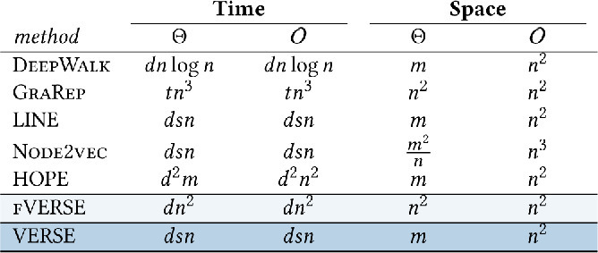
3.6 Similarity Notions in Previous Approaches
Here, we provide additional theoretical considerations of VERSE compared to LINE [41], DeepWalk [37] and Node2vec [15] and demonstrate how our general model subsumes and extends previous research in versatility and scalability.
Comparison withDeepWalkandNode2vec.DeepWalk and Node2vec generate samples from random walks of fixed window size w by the word2vec sampling strategy [29]. We derive a relationship between the window size w of that strategy and the damping factor α of Personalized PageRank.
Let Xr be the random variable that represents the length of a random walk r sampled with parameter w by the word2vec sampling strategy. Then for any 0 < j ≤ w
For each node v ∈ V, word2vec strategy samples two random walks of length w starting from v ∈ V. These two random walks represents the context of v, where v is the central node of a walk of length 2w + 1. The model is then trained on increasing context size up to w. Therefore, the number of nodes sampled for each random walk amount to $\sum _{i=1}^w i= \frac{w(w+1)}{2}$. A node at distance 0 < j ≤ w is sampled (w − j + 1) times; thus, the final probability is $\frac{2}{w(w+1)}(w-j + 1)$.
Personalized PageRank provides the maximum likelihood estimation for the distribution in Equation 7 for $\alpha = \frac{w-1}{w+1}$. Then, w = 10 corresponds to α = 0.82, which is close to the standard α = 0.85, proved effective in practice [10]. On the other hand, α = 0.95, which, for example, achieves the best performance on a task in Section 4.2, corresponds to w = 39. Such large w prohibitively increases the computation time for DeepWalk and Node2vec.
Comparison withLINE.LINE introduces the concept of first- and second-order proximities to model complex node relationships. As we discussed, in VERSE, first-order proximity corresponds to the dot-product among the similarity vectors in the embedding space:
On the other hand, second-order proximity corresponds to letting VERSE learn one more matrix W′, so as to model asymmetric similarities of nodes in the embedding space. We do that by defining simE asymmetrically, using both W and W′:
The intuition behind second-order proximity is the same as that of SimRank: similar nodes have similar neighborhoods. Every previous method, except for LINE-1, used second-order proximities, due to the word2vec interpretation of embeddings borrowed by DeepWalk and Node2vec. In our model, second-order proximities can be encoded by adding an additional matrix; we empirically evaluate their effectiveness in Section 4.
4 Experiments
We evaluate VERSE against several state-of-the-art graph embedding algorithms. For repeatability purposes, we provide all data sets and the C++ source code for VERSE1, DeepWalk2 and Node2vec3. We run the experiments on an Amazon AWS c4.8 instance with 60Gb RAM. Each method is assessed on the best possible parameters, with early termination of the computation in case no result is returned within one day. We provide the following state-of-the-art graph embedding methods for comparison:
DeepWalk [37]: This approach learns an embedding by sampling random walks from each node, applying word2vec-based learning on those walks. We use the default parameters described in the paper, i.e., walk length t = 80, number of walks per node γ = 80, and window size w = 10.
LINE [41]: This approach learns a d-dimensional embedding in two steps , both using adjacency similarity. First, it learns d/2 dimensions using first-order proximity; then, it learns another d/2 features using second-order proximity. Last, the two halves are normalized and concatenated. We obtained a copy of the code4 and run experiments with total T = 1010 samples and s = 5 negative samples, as described in the paper.
GraRep [11]: This method factorizes the full adjacency similarity matrix using SVD, multiplies the matrix by itself, and repeats the process t times. The final embedding is obtained by concatenating the factorized vectors. We use t = 4 and 32 dimensions for each SVD factorization; thus, the final embedding has d = 128.
HOPE [33]: This method is a revised Singular Value Decomposition restricted to sparse similarity matrices. We report the results obtained running HOPE with the default parameters, i.e, Katz similarity (an extension of Katz centrality [23]) as the similarity measure and β inversely proportional to the spectral radius. Since Katz similarity does not converge on directed graphs with sink nodes, we used Personalized PageRank with α = 0.85 for the CoCit dataset.
Node2vec [15]: This is a hyperparameter-supervised approach that extends DeepWalk by adding two parameters, p and q, so as to control DeepWalk’s random walk sampling. The special case with parameters p = 1, q = 1 corresponds to DeepWalk ; yet, sometimes Node2vec shows worse performance than DeepWalk in our evaluation, due to the fact it uses negative sampling, while DeepWalk uses hierarchical softmax. We fine-tuned the hyperparameters p and q on each dataset and task. Moreover, we used a large training data to fairly compare to DeepWalk, i.e., walk length l = 80, number of walks per node r = 80, and window size w = 10.
Baselines. In addition to graph embeddings methods, we implemented the following baselines.
Logistic regression: We use the well-known logistic regression method as a baseline for link prediction. We train the model on a set of common node-specific features, namely node degree, number of common neighbors, Adamic-Adar, Jaccard coefficient, preferential attachment, and resource allocation index [27, 28].
Louvain community detection [9]: We employ a standard partition method for community detection as a baseline for graph clustering, reporting the best partition in terms of modularity [32].
Table 3:Dataset characteristics: number of vertices |V|, number of edges |E|; number of node labels $|\mathcal {L}|$; average node degree; modularity [32]; density defined as $|E|/\binom{|V|}{2}$.
Size
Statistics
dataset
|V|
|E|
$|\mathcal {L}|$
Avg. degree
Mod.
Density
BlogCatalog
10k
334k
39
64.8
0.24
6.3 × 10− 3
CoCit
44k
195k
15
8.86
0.72
2.0 × 10− 4
CoAuthor
52k
178k
—
6.94
0.84
1.3 × 10− 4
VK
79k
2.7M
2
34.1
0.47
8.7 × 10− 4
YouTube
1.1M
3M
47
5.25
0.71
9.2 × 10− 6
Orkut
3.1M
234M
50
70
0.68
2.4 × 10− 5
Parameter settings. In line with previous research [15, 37, 41] we set the embedding dimensionality d to 128. The learning procedure (Algorithm 1, Line 3) is run 105 times for VERSE and 250 times for fVERSE ; the difference in setting is motivated by the number of model updates which is $\mathcal {O}(n)$ in VERSE and $\mathcal {O}(n^2)$ in fVERSE.
We use LIBLINEAR [13] to perform logistic regression with default parameter settings. Unlike previous work [15, 37, 41] we employ a stricter assumption for multi-label node classification: the number of correct classes is not known apriori, but found through the Label Powerset multi-label classification approach [45].
For link prediction and multi-label classification, we evaluated each individual embedding 10 times in order to reduce the noise introduced by the classifier. Unless otherwise stated, we run each experiment 10 times, and report the average value among the runs. Throughout our experimental study, we use the above parameters as default, unless indicated otherwise.
Datasets. We test our methods on six real datasets; we report the main data characteristics in Table 3.
BlogCatalog [54] is a network of social interactions among bloggers in the BlogCatalog website. Node-labels represent topic categories provided by authors.
Microsoft Academic Graph [1] is a network of academic papers, citations, authors, and affiliations from Microsoft Academic website released for the KDD-2016 cup. It contains 150 million papers up to February 2016 spanning various disciplines from math to biology. We extracted two separate subgraphs from the original network, using 15 conferences in data mining, databases, and machine learning. The first, CoAuthor, is a co-authorship network among authors. The second, CoCit, is a network of papers citing other papers; labels represent conferences in which papers were published.
VK is a Russian all-encompassing social network. We extracted two snapshots of the network in November 2016 and May 2017 to obtain information about link appearance. We use the gender of the user for classification and country for clustering.
YouTube [43] is a network of social interactions among users of the YouTube video platform. The labels represent groups of viewers by video genres.
Orkut [52] is a network of social interactions among users of the Orkut social network platform. The labels represent communities of users. We extracted the 50 biggest communities and use them as labels for classification.
Evaluation methodology. The default form of VERSE runs Personalized PageRank with α = 0.85. For the sake of fairness, we design a hyperparameter-supervised variant of VERSE, by analogy to the hyperparameter-tuned variant of DeepWalk introduced by Node2vec [15]. This variant, hsVERSE, selects the best similarity with cross-validation across two proximity orders (as discussed in Section 3.6) and three similarities (Section 3.3) with α ∈ {0.45, 0.55, 0.65, 0.75, 0.85, 0.95} for ${sim}_\mathrm{G}^{\mathrm{PPR}}$ and C ∈ {0.15, 0.25, 0.35, 0.45, 0.55, 0.65} for ${sim}_\mathrm{G}^{\mathrm{SR}}$.
Table 4:Vector operators used for link-prediction task for each u, v ∈ V and corresponding embeddings $\mathbf {a}, \mathbf {b} \in \mathbb {R}^d$.
Operator
Result
Average
(a + b)/2
Concat
[a1, …, ad, b1, …, bd]
Hadamard
[a1*b1, …, ad*bd]
Weighted L1
[|a1 − b1|, …, |ad − bd|]
Weighted L2
[(a1 − b1)2, …, (ad − bd)2]
Table 5:Link prediction results on the CoAuthor coauthorship graph. Best results per method are underlined.
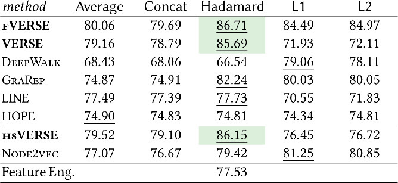
Table 6:Link prediction results on the VK social graph. Best results per method are underlined.
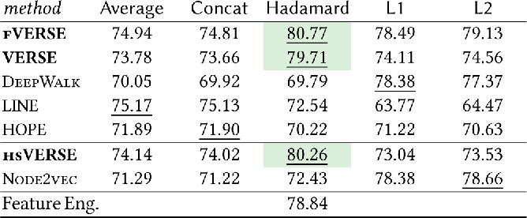
Table 7:Multi-class classification results in CoCit dataset.
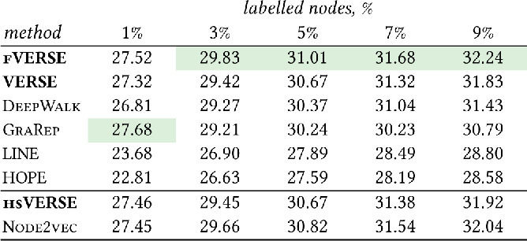
4.1 Link Prediction
Link prediction is the task of anticipating the appearance of a link between two nodes in a network. Conventional measures for link prediction include Adamic-Adar, Preferential attachment, Katz, and Jaccard coefficient. We train a Logistic regression classifier on edge-wise features obtained with the methods shown in Table 4. For instance, for a pair of nodes u, v, the Concat operator returns a vector as the sequential concatenation of the embeddings f(u) and f(v). On the CoAuthor data, we predict new links for 2015 and 2016 co-authorships, using the network until 2014 for training; on VK, we predict whether a new friendship link appears between November 2016 and May 2017, using 50% of the new links for training and 50% for testing. We train the binary classifier by sampling non-existing edges as negative examples. Tables 5 and 6 report the attained accuracy. As a baseline, we use a logistic regression classifier trained on the respective data sets’ features.
VERSE with Hadamard product of vectors is consistently the best edge representation. We attribute this quality to the explicit reconstruction we achieve using noise contrastive estimation. VERSE consistently outperforms the baseline in the tested datasets. Besides, the hyperparameter-supervised hsVERSE variant outruns Node2vec on all datasets.
4.2 Node Classification
We now conduct an extensive evaluation on classification and report results for all the methods, where possible, with the CoCit , VK , YouTube , and Orkut graphs. Node classification aims to predict of the correct node labels in a graph, as described previously in this section.
We evaluate accuracy by the Micro-F1 and Macro-F1 percentage measures. We report only Macro-F1, since we experience similar behaviors with Micro-F1. For each dataset we conduct multiple experiments, selecting a random sample of nodes for training and leaving the remaining nodes for testing. The results for four datasets, shown in Tables 7-10, exhibit similar trends: VERSE yields predictions comparable or superior to those of the other contestants, while it scales to large networks such as Orkut. LINE outperforms VERSE only in VK, where the gender of users is better captured using the direct neighborhood. The hyperparameter-supervised variant, hsVERSE, is on a par with Node2vec in terms of quality on CoCit and VK; on the largest datasets YouTube and Orkut, hsVERSE keeps outperforming unsupervised alternatives, while Node2vec depletes the memory.
Table 8:Multi-class classification results in VK dataset.
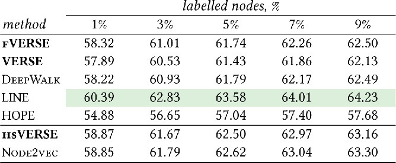
Table 9:Multi-label classification results in YouTube dataset.
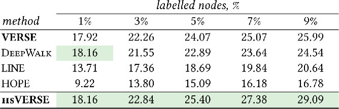
Table 10:Multi-class classification results in Orkut dataset.
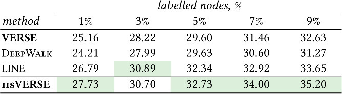
4.3 Node Clustering
Graph clustering detects groups of nodes with similar characteristics [9, 32]. We assess the embedding methods, using the k-means algorithm with k-means++ initialization [5] to cluster the embedded points in a d-dimensional space. Table 11 reports the Normalized Mutual Information (NMI) with respect to the original label distribution. On CoAuthor, VERSE has comparable performance with DeepWalk; yet on VK, VERSE outperforms all other methods.
We also assess graph embeddings on their ability to capture the graph community structure. We apply k-means with different k values between 2 and 50 and select the best modularity [32] score. Table 12 presents our results, along with the modularity obtained by the Louvain method, the state-of-the-art modularity maximization algorithm [9]. VERSE variants produce result almost equal that those of Louvain, outperforming previous methods, while the three methods that could manage the Orkut data perform similarly.
Table 11:Node clustering results in terms of NMI.
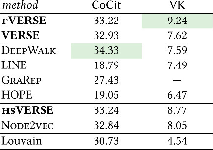
Table 12:Node clustering results in terms of modularity.
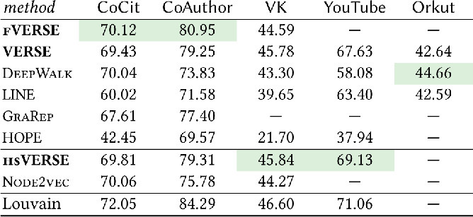
4.4 Graph Reconstruction
Good graph embeddings should preserve the graph structure in the embedding space. We evaluate the performance of our method on reconstructing the graph's adjacency matrix. Since each adjacent node should be close in the embedding space, we first sort any node other than the one considered by decreasing cosine distance among the vectors. Afterwards, we take a number of nodes equal to the actual degree of the node in the graph and connect to the considered node to create the graph structure.
Table 13 reports the relative accuracy measured as the number of correct nodes in the neighborhood of a node in the embedding space. Again, VERSE performs comparably well; its exhaustive variant, fVERSE, which harnesses the full similarity does even better; however, the top performer is hsVERSE , which achieves the obtained result when instantiated to the Adjacency Similarity. This result is unsurprising, given that the adjacency similarity measure tailors hsVERSE for the task of graph reconstruction.
Table 13:Graph reconstruction % for all datasets.
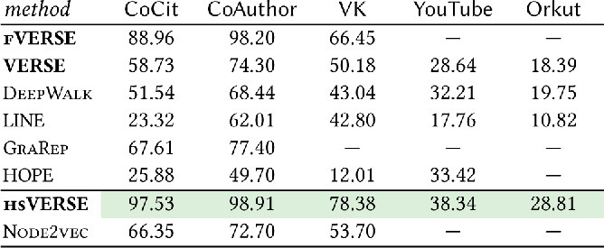
4.5 Parameter Sensitivity
We also evaluate the sensitivity of VERSE to parameter choice. Figures , depict node classification performance in terms of Micro-F1 on the BlogCatalog dataset, with 10% of nodes labeled.
The dimensionality d determines the size of the embedding, and hence the possibility to compute more fine-grained representations. The performance grows linearly as the number of dimensions approaches 128, while with larger d we observe no further improvement. Sampled VERSE instead, performs comparably better than fVERSE in low dimensional spaces, but degrades as d becomes larger than 128; this behavior reflects a characteristic of node sampling that tends to preserve similarities of close neighborhoods in low-dimensional embeddings, while the VERSE leverages the entire graph structure for larger dimensionality
The last parameter we study is the damping factor α which amounts to the inverse of the probability of restarting random walks from the initial node. As shown in Figure , the quality of classification accurary is quite robust with respect to α for both VERSE and fVERSE, only compromised by extreme values. An α value close to 0 reduces PPR to an exploration of the immediate neighborhood of the node. On the other hand, a value close to 1 amounts to regular PageRank, deeming all nodes as equally important. This result vindicates our work and distinguishes it from previous methods based on local neighborhood expansion.
4.6 Scalability
We now present runtime results on synthetic graphs of growing size, generated by the Watts Strogatz model [50], setting VERSE against scalable methods with C++ implementations, namely DeepWalk , LINE, and Node2vec . For each method, we report the total wall-clock time, with graph loading and necessary preprocessing steps included. We used LINE -2 time for fair comparison. As Figure 4 shows, VERSE is comfortably the most efficient and scalable method, processing 106 nodes in about 3 hours, while DeepWalk and LINE take from 6 to 15 hours. 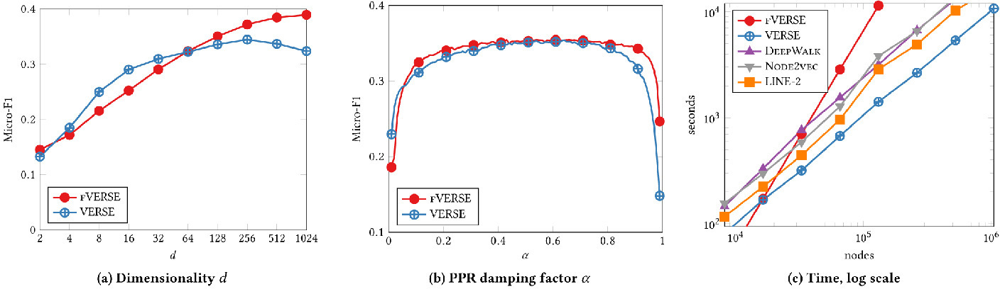
Figure 4:Classification performance of various parameters in Fig. , and scalability of different methods in Fig. .
4.7 Visualization
Last, we show how different embeddings are visualized on a plane. We apply t-SNE [47] with default parameters to each embedding for a subset of 1500 nodes from the CoCit dataset, equally distributed in 5 classes (i.e., conferences); we set the density areas for each class by Kernel Density Estimation. Figure 5 depicts the result. VERSE produces well separated clusters with low noise, even finding distinctions among papers of the same community, namely ICDE () and VLDB (). 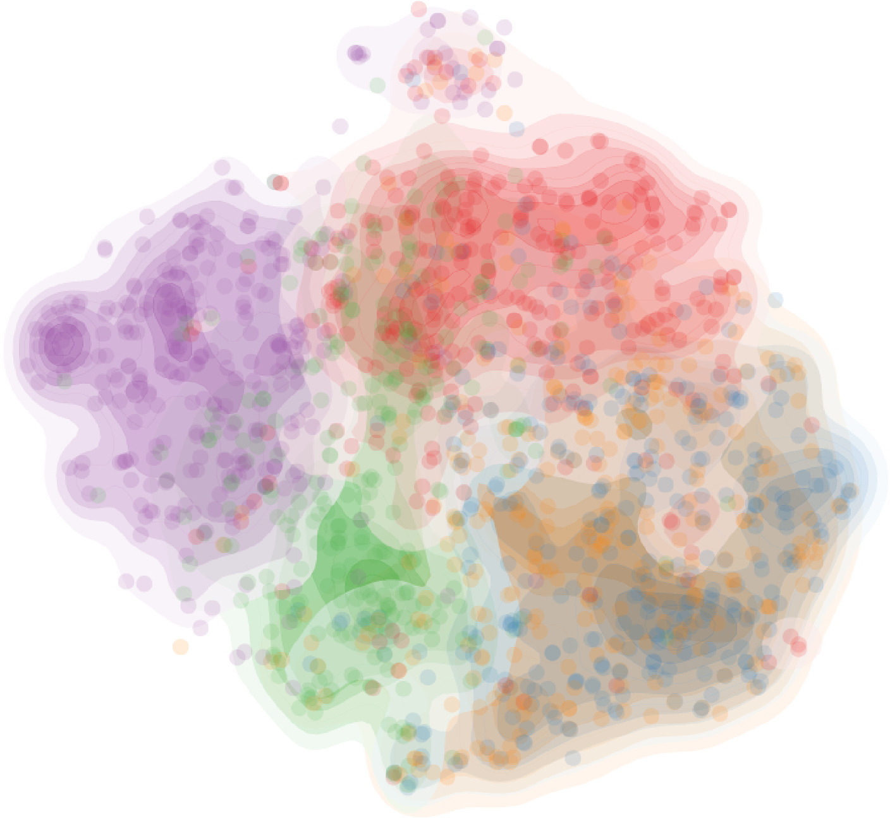
Figure 5:Visualizations of a subset of nodes from CoCit graph with selected conferences: VLDB, ICDE, KDD, WWW, and NIPS. Note that the number of nodes per class is the same for all conferences.
5 Conclusions
We introduced a new perspective on graph embeddings: to be expressive, a graph embedding should capture some similarity measure among nodes. Armed with this perspective, we developed a scalable embedding algorithm, VERSE . In a departure from previous works in the area, VERSE aims to reconstruct the distribution of any chosen similarity measure for each graph node. Thereby, VERSE brings in its scope a global view of the graph, while substantially reducing the number of parameters required for training. VERSE attains linear time complexity, hence it scales to large real graphs, while it only requires space to store the graph. Besides, we have shed light on some previous works on graph embeddings, looking at them and interpreting them through the prism of vertex similarity.
Our thorough experimental study shows that, even instantiated with PPR as a default similarity notion, VERSE consistently outperforms stateoftheart approaches for graph embeddings in a plethora of graph tasks, while a hyperparametersupervised variant does even better. Thus, we have provided strong evidence that embeddings genuinely based on vertex similarity address graph mining challenges better than others.
Sami Abu-El-Haija, Bryan Perozzi, and Rami Al-Rfou. 2017. Learning Edge Representations via Low-Rank Asymmetric Projections. CIKM (2017).
Amr Ahmed, Nino Shervashidze, Shravan Narayanamurthy, Vanja Josifovski, and Alexander J Smola. 2013. Distributed large-scale natural graph factorization. In WWW. ACM, 37–48.
Leman Akoglu, Mary McGlohon, and Christos Faloutsos. 2010. Oddball: Spotting anomalies in weighted graphs. In PAKDD. 410–421.
David Arthur and Sergei Vassilvitskii. 2007. k-means++: The advantages of careful seeding. In SIAM. 1027–1035.
Mikhail Belkin and Partha Niyogi. 2001. Laplacian eigenmaps and spectral techniques for embedding and clustering. In NIPS. 585–591.
Yoshua Bengio, Aaron Courville, and Pascal Vincent. 2013. Representation learning: A review and new perspectives. TPAMI (2013), 1798–1828.
Yoshua Bengio, Réjean Ducharme, Pascal Vincent, and Christian Jauvin. 2003. A neural probabilistic language model. JMLR (2003), 1137–1155.
Vincent D Blondel, Jean-Loup Guillaume, Renaud Lambiotte, and Etienne Lefebvre. 2008. Fast unfolding of communities in large networks. Journal of statistical mechanics: theory and experiment10 (2008).
Sergey Brin and Lawrence Page. 1998. The anatomy of a large-scale hypertextual Web search engine. Computer Networks and ISDN Systems(1998), 107 – 117.
Shaosheng Cao, Wei Lu, and Qiongkai Xu. 2015. GraRep: Learning Graph Representations with Global Structural Information. In CIKM. 891–900.
Shaosheng Cao, Wei Lu, and Qiongkai Xu. 2016. Deep Neural Networks for Learning Graph Representations. In AAAI. 1145–1152.
Rong-En Fan, Kai-Wei Chang, Cho-Jui Hsieh, Xiang-Rui Wang, and Chih-Jen Lin. 2008. LIBLINEAR: A library for large linear classification. JMLR9, Aug (2008), 1871–1874.
Ian Goodfellow, Yoshua Bengio, and Aaron Courville. 2016. Deep learning. MIT Press.
Aditya Grover and Jure Leskovec. 2016. node2vec: Scalable Feature Learning for Networks. In KDD. 855–864.
Michael Gutmann and Aapo Hyvärinen. 2010. Noise-contrastive estimation: A new estimation principle for unnormalized statistical models.. In AISTATS. 297–304.
Michael U Gutmann and Aapo Hyvärinen. 2012. Noise-contrastive estimation of unnormalized statistical models, with applications to natural image statistics. JMLR13(2012), 307–361.
Keith Henderson, Brian Gallagher, Lei Li, Leman Akoglu, Tina Eliassi-Rad, Hanghang Tong, and Christos Faloutsos. 2011. It's who you know: graph mining using recursive structural features. In KDD. 663–671.
Jiafeng Hu, CK Cheng, Zhipeng Huang, Yixiang Fang, and Siqiang Luo. 2017. On Embedding Uncertain Graphs. In CIKM. ACM.
Xiao Huang, Jundong Li, and Xia Hu. 2017. Label informed attributed network embedding. In WSDM. ACM, 731–739.
Glen Jeh and Jennifer Widom. 2002. SimRank: a measure of structural-context similarity. In KDD. 538–543.
Minhao Jiang, Ada Wai-Chee Fu, and Raymond Chi-Wing Wong. 2017. READS: a random walk approach for efficient and accurate dynamic SimRank. VLDB10, 9 (2017), 937–948.
Leo Katz. 1953. A new status index derived from sociometric analysis. Psychometrika18, 1 (1953), 39–43.
Alex Krizhevsky, Ilya Sutskever, and Geoffrey E Hinton. 2012. Imagenet classification with deep convolutional neural networks. 1097–1105.
Matthieu Labeau and Alexandre Allauzen. 2017. An experimental analysis of Noise-Contrastive Estimation: the noise distribution matters. EACL (2017).
John A. Lee and Michel Verleysen. 2007. Nonlinear Dimensionality Reduction(1st ed.). Springer Publishing Company, Incorporated.
Ryan N Lichtenwalter, Jake T Lussier, and Nitesh V Chawla. 2010. New perspectives and methods in link prediction. In KDD. 243–252.
Linyuan Lü and Tao Zhou. 2011. Link prediction in complex networks: A survey. Physica A: Statistical Mechanics and its Applications390, 6(2011), 1150–1170.
Tomas Mikolov, Ilya Sutskever, Kai Chen, Gregory S. Corrado, and Jeffrey Dean. 2013. Distributed Representations of Words and Phrases and their Compositionality. In NIPS. 3111–3119.
Andriy Mnih and Yee Whye Teh. 2012. A fast and simple algorithm for training neural probabilistic language models. In ICML. 1751–1758.
Annamalai Narayanan, Mahinthan Chandramohan, Lihui Chen, Yang Liu, and Santhoshkumar Saminathan. 2016. subgraph2vec: Learning distributed representations of rooted sub-graphs from large graphs. arXiv preprint arXiv:1606.08928(2016).
Mark EJ Newman. 2006. Modularity and community structure in networks. PNAS (2006), 8577–8582.
Mingdong Ou, Peng Cui, Jian Pei, Ziwei Zhang, and Wenwu Zhu. 2016. Asymmetric transitivity preserving graph embedding. In KDD. 1105–1114.
Lawrence Page, Sergey Brin, Rajeev Motwani, and Terry Winograd. 1999. The PageRank citation ranking: bringing order to the web.(1999).
Jeffrey Pennington, Richard Socher, and Christopher D Manning. 2014. Glove: Global Vectors for Word Representation.. In EMNLP. 1532–1543.
Bryan Perozzi, Leman Akoglu, Patricia Iglesias Sánchez, and Emmanuel Müller. 2014. Focused clustering and outlier detection in large attributed graphs. In KDD. 1346–1355.
Bryan Perozzi, Rami Al-Rfou, and Steven Skiena. 2014. DeepWalk: online learning of social representations. In KDD. 701–710.
Leonardo FR Ribeiro, Pedro HP Saverese, and Daniel R Figueiredo. 2017. struc2vec: Learning node representations from structural identity. In KDD. ACM, 385–394.
Sam T Roweis and Lawrence K Saul. 2000. Nonlinear dimensionality reduction by locally linear embedding. science290, 5500 (2000), 2323–2326.
Jiliang Tang and Huan Liu. 2012. Unsupervised Feature Selection for Linked Social Media Data. In KDD. 904–912.
Jian Tang, Meng Qu, Mingzhe Wang, Ming Zhang, Jun Yan, and Qiaozhu Mei. 2015. LINE: Large-scale Information Network Embedding. In WWW. 1067–1077.
Lei Tang and Huan Liu. 2009. Relational learning via latent social dimensions. In KDD. 817–826.
Lei Tang and Huan Liu. 2009. Scalable learning of collective behavior based on sparse social dimensions. In CIKM. 1107–1116.
Joshua B Tenenbaum, Vin De Silva, and John C Langford. 2000. A global geometric framework for nonlinear dimensionality reduction. science290, 5500 (2000), 2319–2323.
Grigorios Tsoumakas and Ioannis Katakis. 2006. Multi-label classification: An overview. IJDWM3, 3 (2006).
Cunchao Tu, Weicheng Zhang, Zhiyuan Liu, and Maosong Sun. 2016. Max-Margin DeepWalk: Discriminative Learning of Network Representation. In IJCAI. 3889–3895.
L.J.P. van der Maaten and G.E. Hinton. 2008. Visualizing High-Dimensional Data Using t-SNE. Journal of Machine Learning Research9 (2008), 2579–2605.
Daixin Wang, Peng Cui, and Wenwu Zhu. 2016. Structural Deep Network Embedding. In KDD. 1225–1234.
Suhang Wang, Charu Aggarwal, Jiliang Tang, and Huan Liu. 2017. Attributed Signed Network Embedding. CIKM (2017).
Duncan J Watts and Steven H Strogatz. 1998. Collective dynamics of ‘small-world’ networks. Nature393(1998), 440–442.
Shuicheng Yan, Dong Xu, Benyu Zhang, Hong-Jiang Zhang, Qiang Yang, and Stephen Lin. 2007. Graph embedding and extensions: A general framework for dimensionality reduction. TPAMI29, 1 (2007).
Jaewon Yang and Jure Leskovec. 2015. Defining and evaluating network communities based on ground-truth. Knowledge and Information Systems42 (2015), 181–213.
Wayne W Zachary. 1977. An information flow model for conflict and fission in small groups. Journal of anthropological research33, 4 (1977), 452–473.
This paper is published under the Creative Commons Attribution 4.0 International (CC-BY 4.0) license. Authors reserve their rights to disseminate the work on their personal and corporate Web sites with the appropriate attribution.